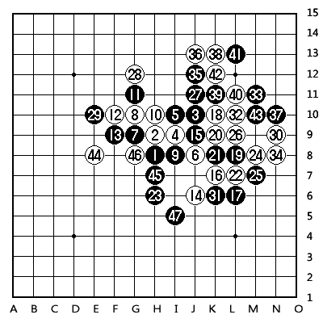
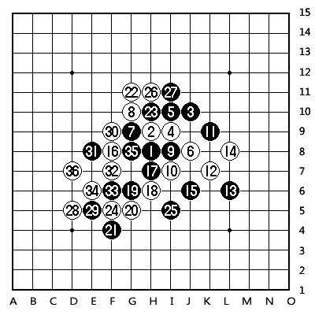
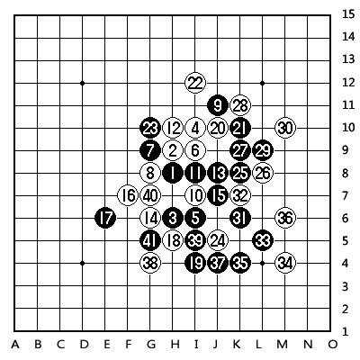

★棋心愉悦★杀手PK赛与林字杀手（祁观）三局棋评
#1 ★棋心愉悦★杀手PK赛与林字杀手（祁观）三局棋评 作者：屏蔽 发表时间：2012-12-13 11:40:56
原文载于我的百度空间【复平面】：http://hi.baidu.com/arbil1989/item/b4940fdef6c34616d80e44d5
===============
前天晚上天字问我有没有时间，反正最近比较闲就答应昨天（12日）和祁观对弈三局，在QQ平台上按RIF规则进行。昨天晚上20:05我们到三手一100桌准时开始对局，第二手都走的直指，双方也都基本默认了。最后我以1:2输掉了对局，也看到了不少对局中的问题。看来一年多没出来打比赛，还是让我与全国顶尖棋手有了一定的差距。

第一局林字开疏星，我没换。正常进行至13手，这里局面基本定型，14虽然有几个常见选点，但其实是比较自由的。实战的14是最近常走的一手，以下15-16，16-J5，17-J7，18-22后黑棋右侧局部攻势不成立，用先手消耗掉白棋右下的优势后，白棋伺机向下方和左下腾挪，与左上的连接配合控盘占优是基本思路，但对手走出了15-15的积极应对！这里考虑了一下16位比较有潜力，因此提前冲掉，至白22都是预想的变化，黑棋受到牵制，白棋基本满意，无论23-I7或J7，白棋都能继续向下拓展。实战23有空间感的一手出乎我的意料！这里考虑了半天，盯住了右侧的一点连接在盘端猛攻，26撕扯黑棋，28、29胜负手！其实左上白棋已经有一套VCT做出，29也算是背水一战。遗憾的是右端黑棋防守精确，局部确实也无法成杀，左方、下方黑棋空间、连接兼备，白棋回天乏术。其实23后只要拓展一下思路，是有空间开阔的胜法的：24-J5，25-J7，26-I4，27-K6，28-47白必胜！

第二局我开疏星，林字交换，打点都没换。想起第一局的情况，我一阵恶心，略一思忖，走了白10的变化。11手黑棋应得很快，至15定型。16选点多，我走了个比较老实的。17-18好？其实这个变化恰好是我前几天录入《五手二打总论》时接触过的变化，实战17似乎略欠考虑，我也就顺势按定式走了18，双方定睛一看发现白棋优势竟然还挺大，关键在于黑棋的连接无法结合成“力量”，而白棋在左侧空间足够，配合斜眠三，进攻点又太多。黑19恐怕也是无奈一手，20、22、24定型后黑棋困难。26通向必胜的选点十分关键！必须承认这里的26是一个败笔，27-30看似裸防，实则在右下构造出VCT！若林字如此应对，难保我不被优势冲昏头脑吧！26直接在左边强硬做棋或许更好，黑棋虽然在右边局部能构造出极强的进攻，但离取胜似乎总欠一手。可惜实战27似乎有些紧张，急于反击，28轻巧一跳就以避免反击的方式干净利落地取胜了。

第三局属于直接被坑了。前15手正常，16、18变化激烈！19挡两边似乎皆可。24的变化我早就拆出了黑必胜，结果前天在QQ下棋走这个变化的时候忽然忘了怎么取胜，后来也没验证过，误以为是可以防守住的分支。结果走到35手的时候我才如梦初醒，草草应付几手后就投了。这里24-31或许是更强的手段吧！
［此帖子已被 屏蔽 在 2012-12-13 11:42:01 编辑过］
［ 淡月疏星 于 2012-12-13 11:43:46 时花20金币送鲜花一朵］
［ 淡月疏星 于 2012-12-13 11:43:46 时花20金币送鲜花一朵］
［ 淡月疏星 于 2012-12-13 11:43:46 时花20金币送鲜花一朵］
［ 淡月疏星 于 2012-12-13 11:43:46 时花20金币送鲜花一朵］
［ 淡月疏星 于 2012-12-13 11:43:46 时花20金币送鲜花一朵］
［ 淡月疏星 于 2012-12-13 11:44:00 时奖励此帖[金币加 100 威望加1］
［ 弱惜 于 2012-12-13 11:48:41 时花20金币送鲜花一朵］
［ 弱惜 于 2012-12-13 11:48:41 时花20金币送鲜花一朵］
［ 錦貝 于 2012-12-13 12:11:54 时花20金币送鲜花一朵］
［ 天籁之琴 于 2012-12-13 12:17:10 时花20金币送鲜花一朵］
［ 天籁之琴 于 2012-12-13 12:17:10 时花20金币送鲜花一朵］
［ 天籁之琴 于 2012-12-13 12:17:10 时花20金币送鲜花一朵］
［ 天籁之琴 于 2012-12-13 12:17:10 时花20金币送鲜花一朵］
［ 天籁之琴 于 2012-12-13 12:17:10 时花20金币送鲜花一朵］
［ 刘琦林 于 2012-12-13 12:29:16 时花20金币送鲜花一朵］
［ 刘琦林 于 2012-12-13 12:29:16 时花20金币送鲜花一朵］
［ 刘琦林 于 2012-12-13 12:29:16 时花20金币送鲜花一朵］
［ 刘琦林 于 2012-12-13 12:29:16 时花20金币送鲜花一朵］
［ 刘琦林 于 2012-12-13 12:29:16 时花20金币送鲜花一朵］
#2 Re:★棋心愉悦★杀手PK赛与林字杀手（祁观）三局棋评 作者：錦貝 发表时间：2012-12-13 11:58:42
有大师风范啊
#3 Re:★棋心愉悦★杀手PK赛与林字杀手（祁观）三局棋评 作者：淡月疏星 发表时间：2012-12-13 12:16:56
九字大师 一评到底啊
#4 Re:★棋心愉悦★杀手PK赛与林字杀手（祁观）三局棋评 作者：潇洒 发表时间：2012-12-13 12:46:47
第三局 24=31可以下吧#5 Re:★棋心愉悦★杀手PK赛与林字杀手（祁观）三局棋评 作者：掌棋宣传员 发表时间：2012-12-13 18:18:05
我已经弱到每盘棋最后都要盯着看半天才明白是怎么杀的了....#6 Re:★棋心愉悦★杀手PK赛与林字杀手（祁观）三局棋评 作者：sonix 发表时间：2012-12-14 9:38:42
第二局16必败。#7 Re:★棋心愉悦★杀手PK赛与林字杀手（祁观）三局棋评 作者：屏蔽 发表时间：2012-12-14 10:18:22
 给跪。
给跪。
#8 Re:★棋心愉悦★杀手PK赛与林字杀手（祁观）三局棋评 作者：魔铃 发表时间：2012-12-14 13:08:51
毒，学习了！#9 Re:sonix【==Re:★棋心愉悦★杀手PK赛与林字杀手（祁观）三局棋评==】 作者：梧桐风 发表时间：2012-12-14 16:56:01
引用：无谱无真相
原文由 sonix 发表于 2012-12-14 9:38:42 :
第二局16必败。
#10 Re:★棋心愉悦★杀手PK赛与林字杀手（祁观）三局棋评 作者：小帮帮 发表时间：2012-12-15 22:04:42
sonix老师好强大！#11 Re:★棋心愉悦★杀手PK赛与林字杀手（祁观）三局棋评 作者：掌棋宣传员 发表时间：2012-12-15 22:51:38
为啥我写棋评就没人回帖呢?~~
#12 Re:★棋心愉悦★杀手PK赛与林字杀手（祁观）三局棋评 作者：屏蔽 发表时间：2012-12-16 1:11:09
这就是人与人的差距啊！#13 Re:掌棋宣传员【==Re:★棋心愉悦★杀手PK赛与林字杀手（祁观）三局棋评==】 作者：小红眼镜 发表时间：2012-12-16 10:02:49
单身纯洁青年与已婚猥琐大叔之间的差距#14 Re:小红眼镜【==Re:掌棋宣传员【==Re:★棋心愉悦★杀手PK赛与林字杀手（祁观）三局棋评==】==】 作者：梧桐风 发表时间：2012-12-16 11:32:19
引用：
原文由 小红眼镜 发表于 2012-12-16 10:02:49 :
单身纯洁青年与已婚猥琐大叔之间的差距
不对不对，应该是单身猥琐青年与已婚猥琐大叔之间的差距
#15 Re:梧桐风【==Re:sonix【==Re:★棋心愉悦★杀手PK赛与林字杀手（祁观）三局棋评==】==】 作者：岑小鱼 发表时间：2012-12-16 18:52:34
引用：
原文由 梧桐风 发表于 2012-12-14 16:56:01 :引用：
原文由 sonix 发表于 2012-12-14 9:38:42 :
第二局16必败。无谱无真相
以前的老谱似乎是黑先活三交换然后占J4拓展取胜
不过本人没能必胜
#16 Re:★棋心愉悦★杀手PK赛与林字杀手（祁观）三局棋评 作者：奇林 发表时间：2012-12-17 23:48:32
我也写一个 看看有没有人回#17 Re:★棋心愉悦★杀手PK赛与林字杀手（祁观）三局棋评 作者：刘琦林 发表时间：2012-12-17 23:51:26
额。。我和16楼貌似很有缘。。。#18 Re:★棋心愉悦★杀手PK赛与林字杀手（祁观）三局棋评 作者：淡月疏星 发表时间：2012-12-18 11:34:33
楼上和16楼 好基友